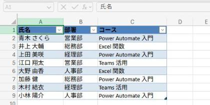
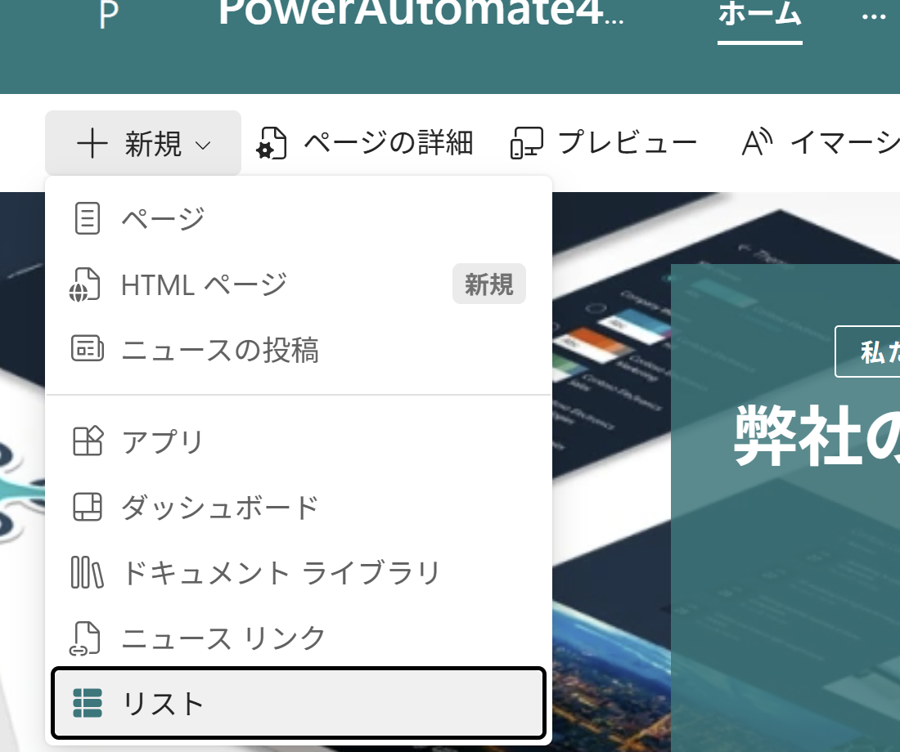
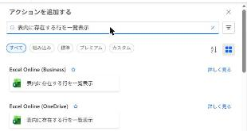
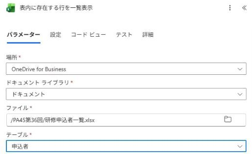
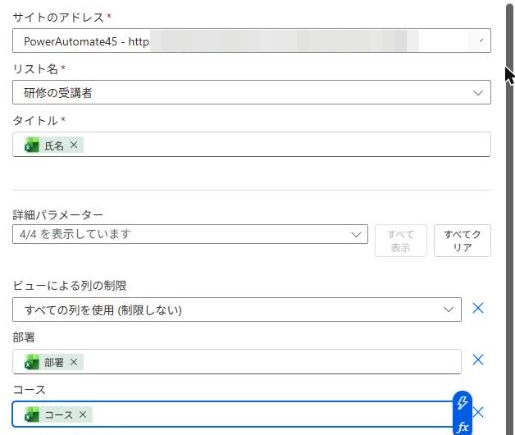
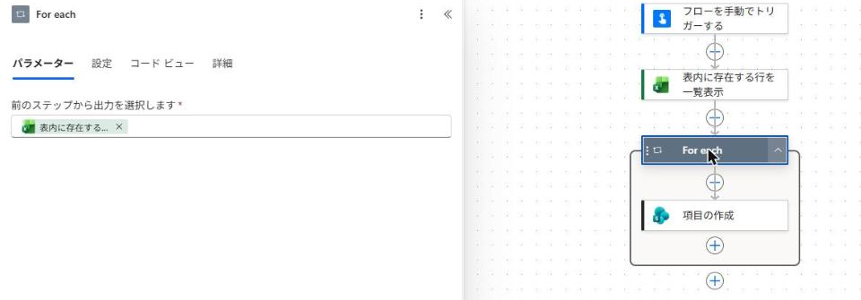
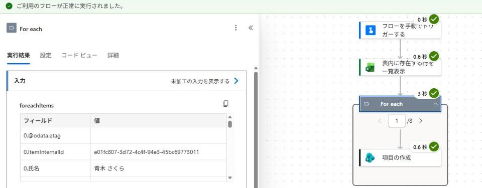
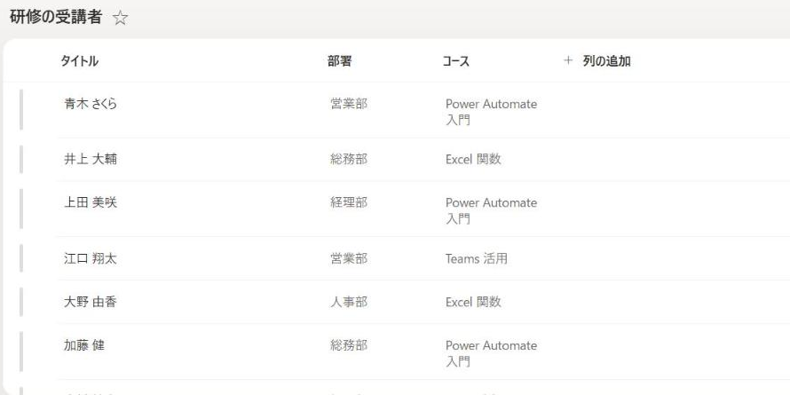

Excel の表を、ボタン1つで SharePoint リストへ人事から毎月 Excel で届く研修の申込者一覧を、フローが1行ずつ SharePoint リストに書き写します。何行あっても、For each が行の数だけくり返すので、フローは同じまま使えます。
今日つくるもの： ボタンを押すと、Excel の表「申込者」の行が、「研修の受講者」リストに1件ずつ作られるフロー。
👆 手動でトリガー→
📗 表内に存在する行を一覧表示→
🔁 For each→
📝 項目の作成
■ 今回の考え方（スライドの考え方①②）
- 事務の仕事は、受け付ける／書き写す／判断する／知らせる／まとめる／作る、の6つの動詞の組み合わせ。
- 今回は「書き写す」をまるごとフローに任せる。届いた一覧（受け付ける）を、台帳のリストへ1行ずつ写す。
- 1回きりなら、リストの「グリッド ビューで編集」に貼り付けても入る。毎月届く・行が多いときにフローが効く。
- 持ち帰る1つ＝一覧を1件ずつ処理するときは For each。何行あっても同じフロー。
📖 この手順書の読み方： 各アクションに表があります。表は 欄 ／ 入れるもの（⚡ のどのアクションから選ぶか）／ なぜ・あとでどう役立つか の順です。オレンジの「次に渡るもの」は、そのアクションが終わったあと、後ろのアクションに何が渡るかです。
🔰 初参加の方へ： ここから始めて大丈夫です。OneDrive と SharePoint が使える会社・学校のアカウントがあれば作れます（個人の Microsoft アカウントでは作れません）。
準備①
練習用の Excel を OneDrive に置く（3分）
この段のゴール自分の OneDrive の PA45第36回 フォルダに、研修申込者一覧.xlsx がある
なぜフローが読むのは、OneDrive か SharePoint に置いた Excel だけ。手元の PC にあるファイルは読めない。今日は、人事から届いた一覧の代わりに練習用のファイルを使う。
1
下の URL をコピーしてブラウザに貼ると、練習用のファイル（架空の名簿・8人）がダウンロードされます。
https://haru-powerplatform.github.io/pa45/slides/vol-36/sample/%E7%A0%94%E4%BF%AE%E7%94%B3%E8%BE%BC%E8%80%85%E4%B8%80%E8%A6%A7.xlsx

表の名前は「申込者」です（Excel の「テーブル デザイン」タブの左端で確かめられます）。2
OneDrive を開き、「＋ 新規」→「フォルダー」で PA45第36回 を作ります。その中に、ダウンロードしたファイルをドラッグしてアップロードします。
次に渡るものファイル → STEP 2 の「ファイル」／表の名前「申込者」→ STEP 2 の「テーブル」
⚠️ 自分の Excel で試すとき： フローが読めるのは「テーブル」になった表だけです。表の中のセルを選んで 「ホーム」→「テーブルとして書式設定」 を押し、先頭行を見出しにしておきます。
準備②
SharePoint に「研修の受講者」リストを作る（3分）
この段のゴールSharePoint のサイトに、タイトル・部署・コースの3列を持つ「研修の受講者」リストがある
なぜ書き写す先を先に作る。列の名前を Excel と同じにしておくと、STEP 3 でどこに何を入れるか迷わない。
1
リストを作ってよい SharePoint のサイト（チームのサイトなど）を開き、「＋ 新規」→「リスト」→「空白のリスト」。名前は 研修の受講者。

2
「＋ 列の追加」→「1 行テキスト」で 部署 を、同じ手順で コース を作ります。
最初からある「タイトル」列は、そのまま氏名を入れる列として使います。
最初からある「タイトル」列は、そのまま氏名を入れる列として使います。
次に渡るものリスト → STEP 3 のリスト名／タイトル・部署・コース → STEP 3 の欄
STEP 1
フローを作る（トリガー＝手動）
この段のゴール「フローを手動でトリガーする」だけが置かれたフローができている
なぜExcel が届いたときに、自分のタイミングで動かしたい。だから入口はボタン（手動）。
1
「作成」→「インスタント クラウド フロー」。フロー名は PA45 第36回 Excel をリストへ、トリガーは「フローを手動でトリガーする」を選んで「作成」。
STEP 2
Excel の表を全部読む
この段のゴール「表内に存在する行を一覧表示」の4つの欄（場所・ドキュメント ライブラリ・ファイル・テーブル）が埋まっている
なぜまず表の行を全部フローに読み込む。読み込んだ行は、列の名前（氏名・部署・コース）で ⚡ に出てくる。
1
トリガーの下の「＋」→「アクションの追加」で「表内に存在する行を一覧表示」と検索します。同じ名前が2つ並びます。使うのは Excel Online (Business) の方です。

Excel Online (OneDrive) は、個人用（Microsoft アカウント）の OneDrive 向けです。2
Excel Online (Business) の「表内に存在する行を一覧表示」

| 欄 | 入れるもの（どこから選ぶか） | なぜ・あとでどう役立つか |
|---|---|---|
| 場所 | OneDrive for Business | 自分の OneDrive |
| ドキュメント ライブラリ | ドキュメント | OneDrive の中の置き場 |
| ファイル | 欄の右のフォルダーのアイコン → PA45第36回 → 研修申込者一覧.xlsx | 準備①で置いたファイル |
| テーブル | 申込者 | 読む表 |
次に渡るもの⚡ 氏名・⚡ 部署・⚡ コース（表の列名がそのまま ⚡ になる）→ STEP 3 の欄
STEP 3
1行ずつ、リストに1件作る
この段のゴール「項目の作成」が For each の中にあり、タイトル・部署・コースに ⚡ が入っている
なぜ読んだ行を、リストの欄に入れる。⚡ 氏名を入れた瞬間、フローが自動で For each（行の数だけくり返す入れ物）を付ける。くり返しを自分で組まなくていい。
1
Excel のアクションの下の「＋」→「アクションの追加」で、SharePoint の「項目の作成」を選びます。
2

| 欄 | 入れるもの（どこから選ぶか） | なぜ・あとでどう役立つか |
|---|---|---|
| サイトのアドレス | 準備②でリストを作ったサイト | 書き写す先のサイト |
| リスト名 | 研修の受講者 | 準備②のリスト |
| タイトル | ⚡ 氏名（表内に存在する行を一覧表示） | 1人分の氏名 |
| 部署 | ⚡ 部署（表内に存在する行を一覧表示） 「詳細パラメーター」の「すべて表示」で欄が出る | 1人分の部署 |
| コース | ⚡ コース（表内に存在する行を一覧表示） | 1人分のコース |
3
タイトルに ⚡ 氏名を入れたところで、項目の作成が「For each」に囲まれます。これで「行の数だけ、項目の作成をくり返す」形になります。

For each の「前のステップから出力を選択します」には、表内に存在する行を一覧表示の行（value）が自動で入ります。触らなくて大丈夫です。昔の画面では Apply to each という名前でした。STEP 4
保存して、テストする
この段のゴール実行がすべて緑になり、「研修の受講者」リストに8人入っている
なぜボタンを1回押すと、表の8行が8件になる。For each の中で何回動いたかも確かめる。
1
右上の「保存」→「テスト」→「手動」→「テスト」。サインインの画面で「続行」→「フローの実行」→「完了」。
2
全部に緑のチェックが付けば成功です。For each の「< 1 /8 >」で、何回目にだれを入れたかを1回ずつ見られます。

3
「研修の受講者」リストを開いて確かめます。

| 欄 | 入れるもの（どこから選ぶか） | なぜ・あとでどう役立つか |
|---|---|---|
| 件数 | 8件 | Excel の表の行の数と同じ |
| タイトル・部署・コース | Excel と同じ中身 | STEP 3 の ⚡ |
⚠️ もう一度押すと： 同じ8人がもう一度入ります（重複は自動で防ぎません）。来月は、新しい月の Excel に差し替えてから押します。
おまけ
時間に余裕がある人向け
この段のゴール（任意）
なぜ当日の45分では扱わない。持ち帰って試す人向け。
1
日付の列があるとき： Excel の日付は、そのままだと 46000 のような数字（シリアル値）で届きます。表内に存在する行を一覧表示の詳細パラメーター 「DateTime 形式」を ISO 8601 にすると、2026-11-19 の形で届きます。（当日のデモの表には日付列がないので、まだ試していません）
2
256行より多いとき： 表内に存在する行を一覧表示は、既定では最初の256行までを読みます。多い表では、アクションの「設定」の「改ページ」をオンにして、しきい値に読みたい行数を入れます。
3
Excel を置いたら自動で動かす： トリガーを OneDrive for Business の「ファイルの作成時」に変えると、フォルダに置いただけで動きます（第32回の形）。そのときは、表内に存在する行を一覧表示の「ファイル」に、トリガーの ⚡ Id を入れます。